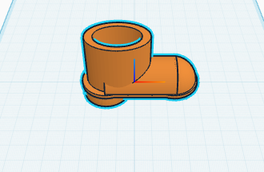

4
Fase 4: Reto de Análisis y Personalización de Color
Instrucción Especial: Por defecto, el diseño original resulta en una bota naranja como se muestra abajo[cite: 2, 3]. Tu objetivo es que el modelo final sea de color AZUL, manteniendo intacta la geometría, las formas y las perforaciones. Identifica qué bloques imponen el color resultante y sustitúyelos por el tono azul.
Modelo geométrico de referencia (Debe ser cambiado a AZUL)
